Misturini Imagem • Presença • Autoridade
Quinze anos fotografando em Canoas. Duas histórias diferentes — escolha a sua.
4,9 · 47 avaliações no Google · Canoas/RS
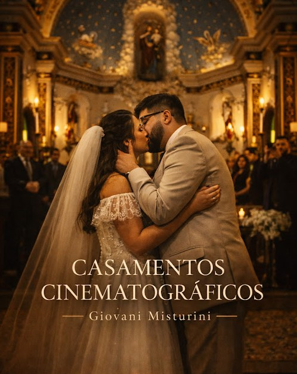
Casamentos
O dia inteiro,
como um filme
Do primeiro botão da camisa ao último abraço da festa. Fotografo o que acontece — a mão do pai tremendo no corredor, a risada que ninguém combinou — e devolvo isso com a luz que aquele momento merecia.
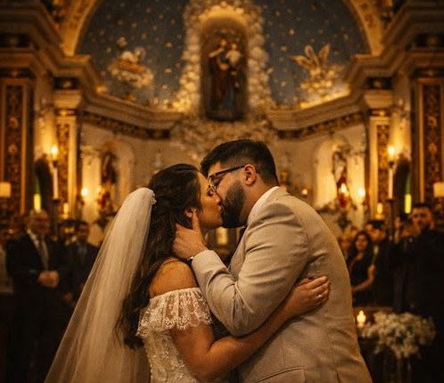
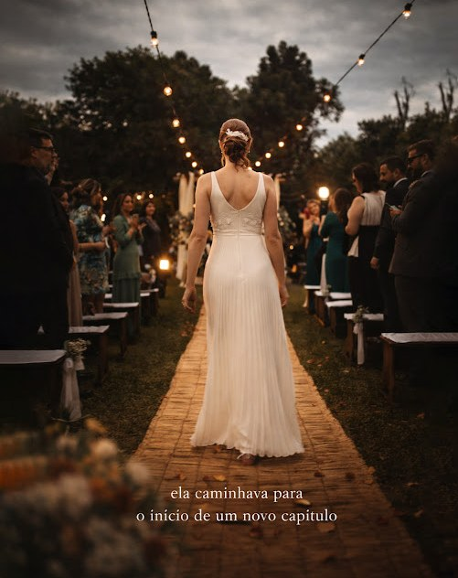
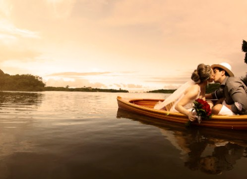
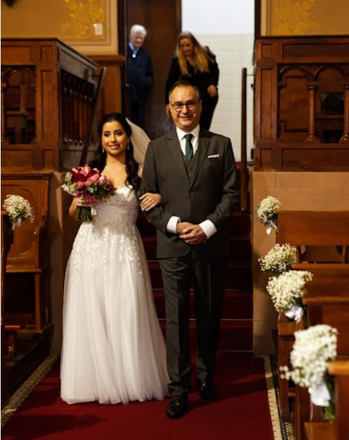
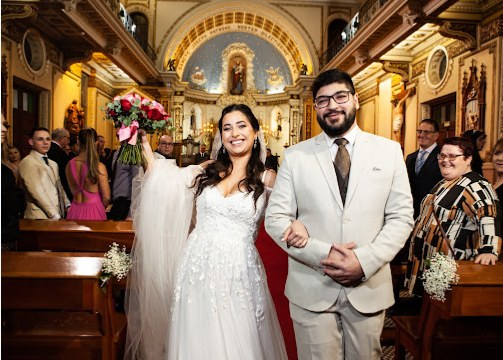
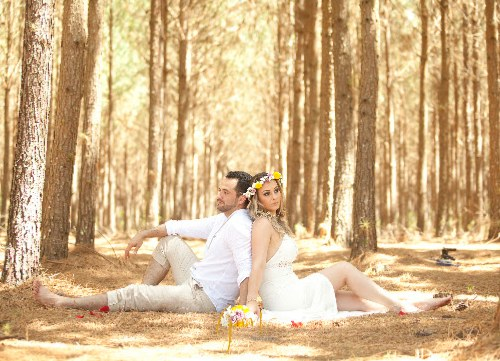
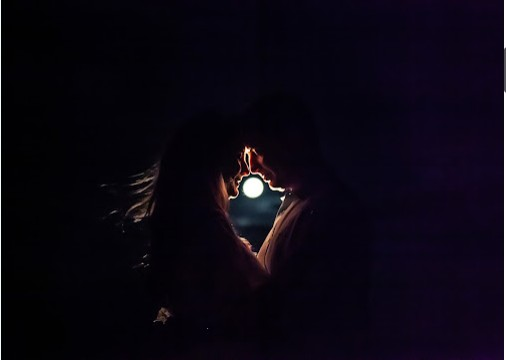
Agenda limitada por data — vale conversar cedo.
Retratos corporativos
A foto que
fala por você
AntesA insegurança na hora da foto. O perfil com uma selfie cortada. A sensação de que a imagem não acompanha o tamanho do seu trabalho.
DepoisUm retrato que sustenta uma proposta, uma palestra, um perfil. Presença, sem pose forçada — o que você já é, fotografado direito.
Sessão conduzida do início ao fim: direção de pose para quem acha que não sabe posar, luz construída para o seu rosto e entrega tratada para uso profissional — LinkedIn, imprensa, site e material de vendas.
Quero minha sessão de posicionamento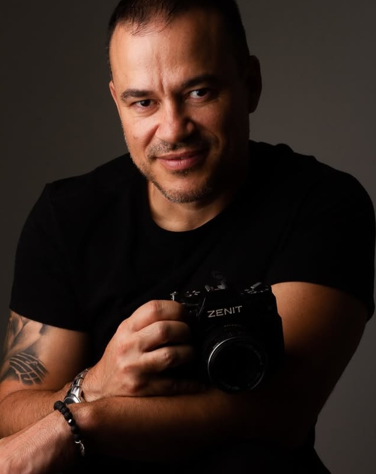
15 anosO fotógrafo
Giovani
Misturini
Quem está por trás das suas melhores memórias? Muito prazer, eu sou Giovani Misturini.
Dedico minha arte a contar histórias com sensibilidade, criatividade e um olhar único. Busco transformar momentos em memórias atemporais, registrando cada detalhe com carinho e dedicação.
Meu estilo combina fotojornalismo, fotografia artística e o refinamento do Fine Art — criando imagens com estética atemporal, iluminação cuidadosa e composições que parecem verdadeiras obras de arte.
- FotojornalismoO instante que não volta
- Fotografia artísticaA luz construída
- Fine ArtO que merece virar imagem
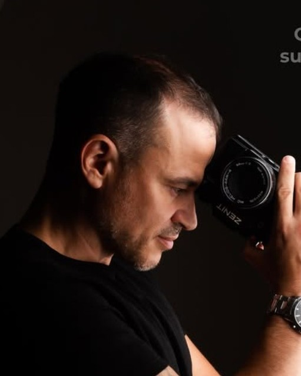
Não é só o que eu vejo pela lente — é o que eu sinto ao transformar instantes em eternidade.
Giovani Misturini
O estúdio
Bela Vista,
Canoas
Fácil de achar: é o prédio com uma câmera gigante na fachada.
- Atendimento
- Até às 19h
- (51) 99961-5071
- @misturini_studio
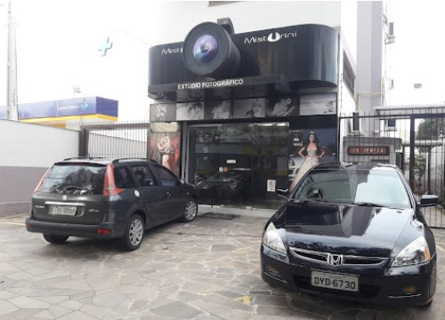
Sua data ou sua imagem —
por onde começamos?
(51) 99961-5071 · @misturini_studio